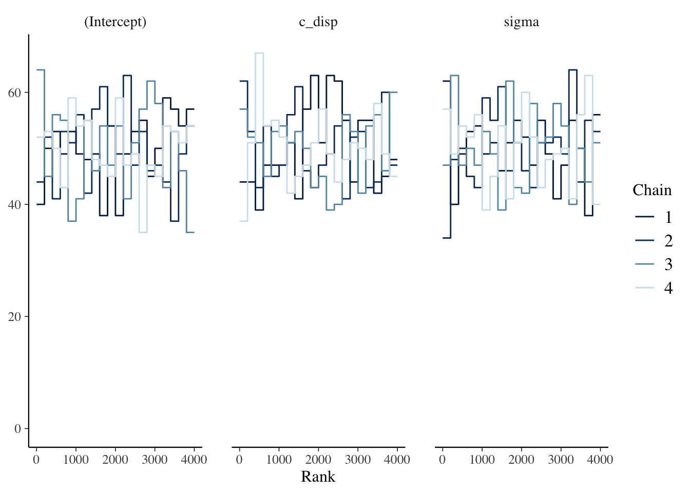
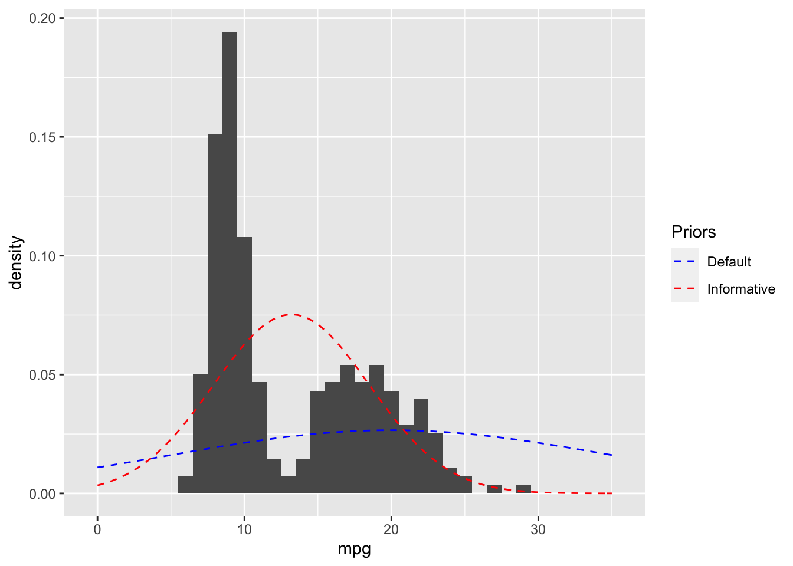
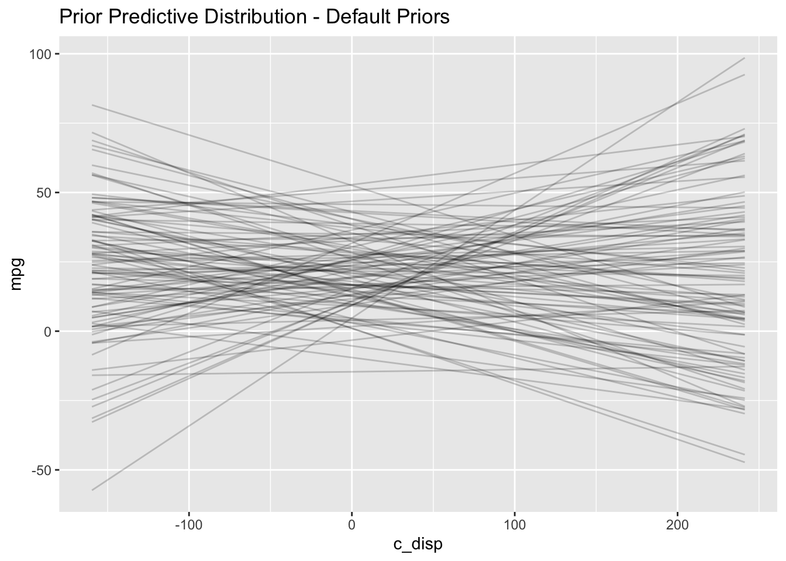
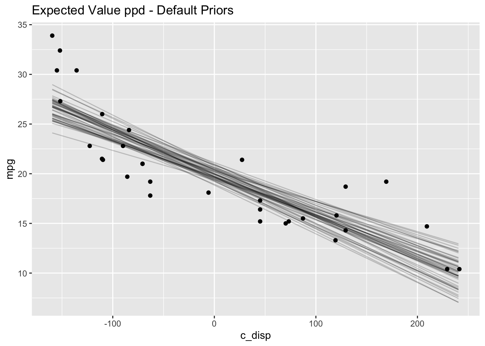
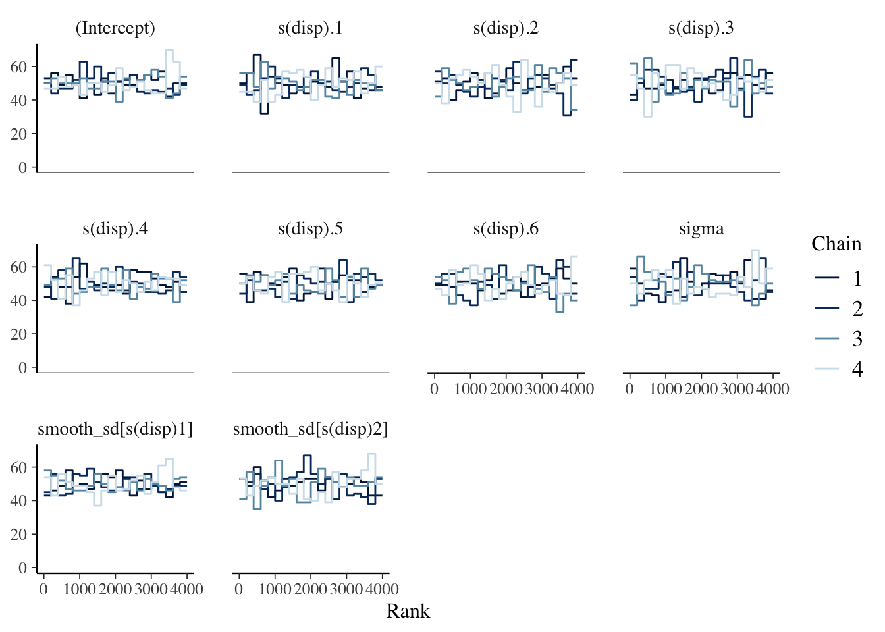
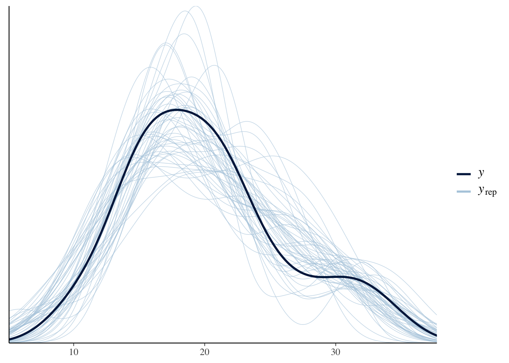

Chapter 2 rstanarm
2.1 Resources
Regression and Other Stories by Gelman, Hill and Vehtari
User-friendly Bayesian regression modeling: A tutorial with rstanarm and shinystan by Muth, Oravecz and Gabry
2.2 Description
The rstanarm package is one of the easiest ways to get started with Bayesian models. The functions parallel the frequentist functions you’re probably already familiar with, and the syntax will also be familiar. You aren’t required to explicitly choose priors because all of the functions have weakly informative priors by default (although some might argue not being required to specify priors is a drawback). The primary limitation I’ve found thus far is the supported types for user-defined priors is somewhat limited.
2.3 Environment Setup
2.4 Linear Model (Default Priors)
2.4.1 Define Model
Let’s start with the following simple linear model:
\[\begin{align*} mpg &\sim Normal(\mu, \sigma^2) \\ \mu &= a + b*disp \\ \end{align*}\]
The stan_glm function from the rstanarm package fits a Bayesian linear model. The syntax is very similar to lm/glm.
2.4.2 Prior Predictive Distribution
Next, I’ll examine the prior predictive distribution to see if the default priors seem reasonable. The prior_summary function shows the default priors for the model as well as the adjusted priors after automatic scaling. See http://mc-stan.org/rstanarm/articles/priors.html if you are interested in the details about how the default and adjusted priors are calculated.
## Priors for model 'mdl1'
## ------
## Intercept (after predictors centered)
## Specified prior:
## ~ normal(location = 20, scale = 2.5)
## Adjusted prior:
## ~ normal(location = 20, scale = 15)
##
## Coefficients
## Specified prior:
## ~ normal(location = 0, scale = 2.5)
## Adjusted prior:
## ~ normal(location = 0, scale = 0.12)
##
## Auxiliary (sigma)
## Specified prior:
## ~ exponential(rate = 1)
## Adjusted prior:
## ~ exponential(rate = 0.17)
## ------
## See help('prior_summary.stanreg') for more detailsOverlaying the default prior for the intercept with the EPA data gives a sense of what a weakly informative prior for this data looks like.
## here() starts at /Users/melissa/r-ladies-bayes-pkgs
# Plot expected value of prior predictive distribution using adjusted priors
N <- 100
prior_samples <- data.frame(a = rnorm(N, 20, 15),
b = rnorm(N, 0, 0.12))
D <- seq(min(mtcars$disp), max(mtcars$disp), length.out = N)
res <- as.data.frame(apply(prior_samples, 1,
function(x) x[1] + x[2] * (D-mean(mtcars$disp)))) %>%
mutate(disp = D) %>%
pivot_longer(cols=c(-"disp"), names_to="iter")
res %>%
ggplot() +
geom_line(aes(x=disp, y=value, group=iter), alpha=0.2) +
labs(x="disp", y="prior predictive mpg")
I notice two things in the prior predictive distribution which seem unrealistic given what I know about the real world: 1) negative mpg and 2) increasing mpg as displacement increases. Later on I’ll choose a more informative prior which incorporates this external knowledge. But let’s proceed with the analysis and see what happens.
2.4.3 Diagnostics
I’ll walk through the steps for manually extracting the key diagnostic information from the mdl1 object since I think that can be helpful to understand exactly what’s going on. However, once you have a handle on these steps I highly recommend the shinystan package; it will automatically create all of these diagnostic plots (and more) with an nice interactive web interface.
2.4.3.1 Trace Plots
The bayesplot package provides the function mcmc_trace which plots the Markov Chain Monte Carlo (MCMC) draws.

There are three things I am looking for in the trace plot of each chain:
Good mixing - In other words, the chain is rapidly changing values across the full region versus getting “stuck” near a particular value and slowly changing.
Stationarity - The mean of the chain is relatively stable.
Convergence - All of the chains spend most of the time around the same high-probability value.
The trace plots above look good.
2.4.3.2 Trace Rank Plots
It can sometimes be hard to interpret the trace plots when there are many chains. An alternative is the mcmc_rank_overlay function. This function plots a trace rank plot which is the distribution of the ranked samples; if the four chains have a roughly uniform distribution that indicates good mixing.

2.4.3.3 \(\widehat{R}\) and Effective Sample Size
In addition to visually examining the chains, we should also check \(\widehat{R}\) which is a measure of convergence. \(\widehat{R} > 1.0\) indicates poor mixing, and the mc_stan documentation recommends only using samples if \(\widehat{R} < 1.05\). However, a recent paper by Vehtari et al. (2020) recommends \(\widehat{R} < 1.01\).
Since MCMC samples are usually correlated, the effective sample size (n_eff) is often less than the number of samples. There is no hard and fast rule for what is an acceptable number for n_eff. McElreath’s guidance is it depends on what you are trying to estimate. If you are interested mostly in the posterior mean, then n_eff = 200 can be enough. But if you are interested in the tails of the distribution and it’s highly skewed then you’ll need n_eff to be much larger. There are two parameters, iter and warmup, which you can adjust in stan_glm if a larger n_eff is needed.
The summary function displays n_eff and \(\widehat{R}\) for the object returned by stan_glm.
##
## Model Info:
## function: stan_glm
## family: gaussian [identity]
## formula: mpg ~ disp
## algorithm: sampling
## sample: 4000 (posterior sample size)
## priors: see help('prior_summary')
## observations: 32
## predictors: 2
##
## Estimates:
## mean sd 10% 50% 90%
## (Intercept) 29.6 1.3 27.9 29.6 31.2
## disp 0.0 0.0 0.0 0.0 0.0
## sigma 3.4 0.5 2.8 3.3 4.0
##
## Fit Diagnostics:
## mean sd 10% 50% 90%
## mean_PPD 20.1 0.9 19.0 20.1 21.2
##
## The mean_ppd is the sample average posterior predictive distribution of the outcome variable (for details see help('summary.stanreg')).
##
## MCMC diagnostics
## mcse Rhat n_eff
## (Intercept) 0.0 1.0 3501
## disp 0.0 1.0 3328
## sigma 0.0 1.0 3056
## mean_PPD 0.0 1.0 3411
## log-posterior 0.0 1.0 1529
##
## For each parameter, mcse is Monte Carlo standard error, n_eff is a crude measure of effective sample size, and Rhat is the potential scale reduction factor on split chains (at convergence Rhat=1).2.4.4 Posterior Distribution
Since the chains, n_eff and \(\widehat{R}\) look good, let’s examine the posterior distributions next.
## (Intercept) disp
## 29.57206 -0.04103| 2.5% | 97.5% | |
|---|---|---|
| (Intercept) | 27.0319 | 32.1255 |
| disp | -0.0509 | -0.0313 |
| sigma | 2.6281 | 4.3876 |
2.4.5 Posterior Predictive Distribution
The posterior_predict function draws samples from the posterior predictive distribution, and then the ppc_dens_overlay function plots the distribution of each draw overlaid with the observed distribution.

Below I also plot the expected value of the posterior predictive distribution and overlay the observations as an alternative way to visualize the result. The posterior_linpred function returns the linear predictor, possibly transformed by the inverse-link function. The posterior_epred function returns the expectation over the posterior predictive distribution. In this example, the model is a Gaussian likelihood with an identity link function, so the two functions return identical results.
newdata <- data.frame(disp=seq(min(mtcars$disp), max(mtcars$disp)))
y_rep <- as.data.frame(t(posterior_epred(mdl1, newdata=newdata, draws=50))) %>%
cbind(newdata) %>%
pivot_longer(cols=starts_with("V"), names_to="grp", values_to="mpg")
y_rep %>%
ggplot(aes(x=disp, y=mpg)) +
geom_line(aes(group=grp), alpha=0.2) +
geom_point(data = mtcars) 
As expected, the linear model is not a good fit to the data.
2.5 Linear Model (User-Defined Priors)
I’ll specify priors which incorporate the prior knowledge from the EPA data as well as that mpg is non-negative and is non-increasing as disp increases. My new model is as follows:
\[\begin{align*} mpg &\sim Normal(\mu, \sigma^2) \\ \mu &= a + b*disp \\ a &\sim Normal(13.2,5.3^2) \\ b &\sim Normal(-0.1, 0.05^2) \\ \sigma &\sim Exponential(1) \end{align*}\]
The differences from the default priors are
The intercept prior is now set to the mean and standard deviation from the EPA data (see plot below for comparison to EPA data and default prior).
The slope prior is no longer symmetric about 0, but rather it is centered at -0.1 so that positive values are less likely. (A prior distribution such as exponential or log-normal might be preferred in this case; however this is a limitation of
rstanarmas those options aren’t available.)

2.5.1 Define Model
2.5.2 Prior Predictive Distribution
Below is an alternative to manually constructing the prior predictive distribution like I did in the previously.
mdl2_prior <- update(mdl2, prior_PD=TRUE, chains=1)
D <- seq(min(mtcars$disp), max(mtcars$disp), length.out = N)
draws <- posterior_epred(mdl2_prior, newdata=data.frame(disp=D), draws=50) %>%
t() %>%
as.data.frame() %>%
mutate(disp=D) %>%
pivot_longer(-disp, names_to="draw", values_to="mpg")
draws %>%
ggplot() +
geom_line(mapping=aes(x=disp, y=mpg, group=draw), alpha=0.2)
2.5.3 Diagnostics

##
## Model Info:
## function: stan_glm
## family: gaussian [identity]
## formula: mpg ~ disp
## algorithm: sampling
## sample: 4000 (posterior sample size)
## priors: see help('prior_summary')
## observations: 32
## predictors: 2
##
## Estimates:
## mean sd 10% 50% 90%
## (Intercept) 29.7 1.2 28.1 29.7 31.2
## disp 0.0 0.0 0.0 0.0 0.0
## sigma 3.2 0.4 2.7 3.2 3.8
##
## Fit Diagnostics:
## mean sd 10% 50% 90%
## mean_PPD 20.0 0.8 19.0 20.0 21.1
##
## The mean_ppd is the sample average posterior predictive distribution of the outcome variable (for details see help('summary.stanreg')).
##
## MCMC diagnostics
## mcse Rhat n_eff
## (Intercept) 0.0 1.0 3848
## disp 0.0 1.0 3908
## sigma 0.0 1.0 3673
## mean_PPD 0.0 1.0 4013
## log-posterior 0.0 1.0 1786
##
## For each parameter, mcse is Monte Carlo standard error, n_eff is a crude measure of effective sample size, and Rhat is the potential scale reduction factor on split chains (at convergence Rhat=1).The trace plots, n_eff and \(\widehat{R}\) all look good.
2.5.4 Posterior Distribution
Now let’s compare the posterior with informative versus default priors:
# Point estimates
knitr::kable(cbind(coef(mdl1), coef(mdl2)), col.names = c("Default", "Informative"))| Default | Informative | |
|---|---|---|
| (Intercept) | 29.572 | 29.6711 |
| disp | -0.041 | -0.0417 |
# 95% credible intervals
knitr::kable(cbind(posterior_interval(mdl1, prob=0.95),
posterior_interval(mdl2, prob=0.95))) %>%
add_header_above(c(" " = 1, "Default" = 2, "Informative" = 2))| 2.5% | 97.5% | 2.5% | 97.5% | |
|---|---|---|---|---|
| (Intercept) | 27.0319 | 32.1255 | 27.3210 | 32.0105 |
| disp | -0.0509 | -0.0313 | -0.0509 | -0.0327 |
| sigma | 2.6281 | 4.3876 | 2.5380 | 4.1322 |
In this case, there is sufficient data that the choice of prior really didn’t make much of a difference.
2.5.5 Posterior Predictive Distribution

# Expected value of posterior predictive
newdata <- data.frame(disp=seq(min(mtcars$disp), max(mtcars$disp)))
y_rep <- as.data.frame(t(posterior_epred(mdl2, newdata=newdata, draws=50))) %>%
cbind(newdata) %>%
pivot_longer(cols=starts_with("V"), names_to="grp", values_to="mpg")
y_rep %>%
ggplot(aes(x=disp, y=mpg)) +
geom_line(aes(group=grp), alpha=0.2) +
geom_point(data = mtcars) 
The results are very similar to those with the default priors.
2.6 Semi-parametric Model
2.6.1 Define model
The linear model is a poor choice for this data, so I’ll try a model with splines next. The stan_gamm4 function from the rstanarm package fits Bayesian nonlinear (and mixed) models.
2.6.2 Prior Predictive Distribution
Unlike the linear model, it’s not as straightforward to manually construct the prior predictive distribution. Fortunately, rstanarm can automatically generate the prior predictive distribution too–we just refit the model without conditioning on the data by setting prior_PD = TRUE.
D <- seq(min(mtcars$disp), max(mtcars$disp), length.out = N)
draws <- posterior_epred(mdl3_prior, newdata=data.frame(disp=D), draws=50) %>%
t() %>%
as.tibble() %>%
mutate(disp=D) %>%
pivot_longer(-disp, names_to="draw", values_to="mpg")## Warning: `as.tibble()` is deprecated as of tibble 2.0.0.
## Please use `as_tibble()` instead.
## The signature and semantics have changed, see `?as_tibble`.
## This warning is displayed once every 8 hours.
## Call `lifecycle::last_warnings()` to see where this warning was generated.## Warning: The `x` argument of `as_tibble.matrix()` must have unique column names if `.name_repair` is omitted as of tibble 2.0.0.
## Using compatibility `.name_repair`.
## This warning is displayed once every 8 hours.
## Call `lifecycle::last_warnings()` to see where this warning was generated.draws %>%
ggplot() +
geom_line(mapping=aes(x=disp, y=mpg, group=draw), alpha=0.2) +
geom_point(data=mtcars, mapping=aes(x=disp, y=mpg), color="blue")
This prior predictive distribution gives us some crazy possibilities. However we saw earlier that there is enough data that the model isn’t very sensitive to the choice of prior, so let’s continue and see what happens.
2.6.3 Diagnostics and Posterior

##
## Model Info:
## function: stan_gamm4
## family: gaussian [identity]
## formula: mpg ~ s(disp, bs = "cr", k = 7)
## algorithm: sampling
## sample: 4000 (posterior sample size)
## priors: see help('prior_summary')
## observations: 32
##
## Estimates:
## mean sd 10% 50% 90%
## (Intercept) 20.1 0.4 19.5 20.1 20.7
## s(disp).1 0.2 1.2 -1.1 0.1 1.6
## s(disp).2 -0.9 1.1 -2.3 -0.7 0.3
## s(disp).3 0.0 0.6 -0.6 0.0 0.7
## s(disp).4 1.2 0.4 0.7 1.2 1.6
## s(disp).5 0.4 0.1 0.2 0.4 0.6
## s(disp).6 -3.1 0.3 -3.5 -3.1 -2.8
## sigma 2.4 0.3 2.0 2.4 2.9
## smooth_sd[s(disp)1] 1.2 0.7 0.5 1.0 2.0
## smooth_sd[s(disp)2] 3.6 2.1 1.7 3.0 6.2
##
## Fit Diagnostics:
## mean sd 10% 50% 90%
## mean_PPD 20.1 0.6 19.3 20.1 20.9
##
## The mean_ppd is the sample average posterior predictive distribution of the outcome variable (for details see help('summary.stanreg')).
##
## MCMC diagnostics
## mcse Rhat n_eff
## (Intercept) 0.0 1.0 3813
## s(disp).1 0.0 1.0 3274
## s(disp).2 0.0 1.0 2149
## s(disp).3 0.0 1.0 3950
## s(disp).4 0.0 1.0 2639
## s(disp).5 0.0 1.0 4652
## s(disp).6 0.0 1.0 3521
## sigma 0.0 1.0 2017
## smooth_sd[s(disp)1] 0.0 1.0 1215
## smooth_sd[s(disp)2] 0.0 1.0 2055
## mean_PPD 0.0 1.0 3909
## log-posterior 0.1 1.0 953
##
## For each parameter, mcse is Monte Carlo standard error, n_eff is a crude measure of effective sample size, and Rhat is the potential scale reduction factor on split chains (at convergence Rhat=1).The chains, n_eff and \(\widehat{R}\) look good. In the Estimates section above, we also see the posteriors for the model parameters; there isn’t an intuitive interpretation of the spline coefficients so I’ll skip ahead to the posterior predictive distribution.
2.6.4 Posterior Predictive Distribution

The expectation over the ppd is plotted below, along with a loess curve for comparison. This model is clearly a better fit to the data than the linear model.
plot_nonlinear(mdl3, prob=0.95) +
geom_point(mapping=aes(x=disp, y=mpg-mean(mpg)),
data=mtcars) +
labs(title="GAM", x="disp", y="mpg-mean(mpg)")
ggplot(mapping=aes(x=disp, y=mpg-mean(mpg)),
data=mtcars) +
geom_point()+
stat_smooth(method="loess",
level=0.95) +
labs(title="LOESS")

2.7 Session Info
## R version 4.0.3 (2020-10-10)
## Platform: x86_64-apple-darwin17.0 (64-bit)
## Running under: macOS Big Sur 10.16
##
## Matrix products: default
## BLAS: /Library/Frameworks/R.framework/Versions/4.0/Resources/lib/libRblas.dylib
## LAPACK: /Library/Frameworks/R.framework/Versions/4.0/Resources/lib/libRlapack.dylib
##
## locale:
## [1] en_US.UTF-8/en_US.UTF-8/en_US.UTF-8/C/en_US.UTF-8/en_US.UTF-8
##
## attached base packages:
## [1] stats graphics grDevices datasets utils methods base
##
## other attached packages:
## [1] here_1.0.1 bayesplot_1.7.2 rstanarm_2.21.1 Rcpp_1.0.5
## [5] kableExtra_1.3.1 gridExtra_2.3 forcats_0.5.0 stringr_1.4.0
## [9] dplyr_1.0.2 purrr_0.3.4 readr_1.4.0 tidyr_1.1.2
## [13] tibble_3.0.4 ggplot2_3.3.2 tidyverse_1.3.0
##
## loaded via a namespace (and not attached):
## [1] minqa_1.2.4 colorspace_2.0-0 ellipsis_0.3.1
## [4] ggridges_0.5.2 rprojroot_2.0.2 rsconnect_0.8.16
## [7] markdown_1.1 base64enc_0.1-3 fs_1.5.0
## [10] rstudioapi_0.13 farver_2.0.3 rstan_2.21.2
## [13] DT_0.16 fansi_0.4.1 lubridate_1.7.9.2
## [16] xml2_1.3.2 splines_4.0.3 codetools_0.2-16
## [19] knitr_1.30 shinythemes_1.1.2 jsonlite_1.7.1
## [22] nloptr_1.2.2.2 broom_0.7.2 dbplyr_2.0.0
## [25] shiny_1.5.0 compiler_4.0.3 httr_1.4.2
## [28] backports_1.2.0 Matrix_1.2-18 assertthat_0.2.1
## [31] fastmap_1.0.1 cli_2.2.0 later_1.1.0.1
## [34] htmltools_0.5.0 prettyunits_1.1.1 tools_4.0.3
## [37] igraph_1.2.6 gtable_0.3.0 glue_1.4.2
## [40] reshape2_1.4.4 V8_3.4.0 cellranger_1.1.0
## [43] vctrs_0.3.5 nlme_3.1-149 crosstalk_1.1.0.1
## [46] xfun_0.19 ps_1.4.0 lme4_1.1-26
## [49] rvest_0.3.6 mime_0.9 miniUI_0.1.1.1
## [52] lifecycle_0.2.0 renv_0.12.0 gtools_3.8.2
## [55] statmod_1.4.35 MASS_7.3-53 zoo_1.8-8
## [58] scales_1.1.1 colourpicker_1.1.0 hms_0.5.3
## [61] promises_1.1.1 parallel_4.0.3 inline_0.3.17
## [64] shinystan_2.5.0 yaml_2.2.1 curl_4.3
## [67] loo_2.3.1 StanHeaders_2.21.0-6 stringi_1.5.3
## [70] highr_0.8 dygraphs_1.1.1.6 boot_1.3-25
## [73] pkgbuild_1.1.0 rlang_0.4.9 pkgconfig_2.0.3
## [76] matrixStats_0.57.0 evaluate_0.14 lattice_0.20-41
## [79] labeling_0.4.2 rstantools_2.1.1 htmlwidgets_1.5.2
## [82] tidyselect_1.1.0 processx_3.4.5 plyr_1.8.6
## [85] magrittr_2.0.1 bookdown_0.21 R6_2.5.0
## [88] generics_0.1.0 DBI_1.1.0 mgcv_1.8-33
## [91] pillar_1.4.7 haven_2.3.1 withr_2.3.0
## [94] xts_0.12.1 survival_3.2-7 modelr_0.1.8
## [97] crayon_1.3.4 rmarkdown_2.5 grid_4.0.3
## [100] readxl_1.3.1 callr_3.5.1 threejs_0.3.3
## [103] reprex_0.3.0 digest_0.6.27 webshot_0.5.2
## [106] xtable_1.8-4 httpuv_1.5.4 RcppParallel_5.0.2
## [109] stats4_4.0.3 munsell_0.5.0 viridisLite_0.3.0
## [112] shinyjs_2.0.0References
Vehtari, Aki, Andrew Gelman, Daniel Simpson, Bob Carpenter, and Paul-Christian Bürkner. 2020. “Rank-Normalization, Folding, and Localization: An Improved \(\widehat{R}\) for Assessing Convergence of Mcmc.” Bayesian Analysis, July. https://doi.org/10.1214/20-ba1221.